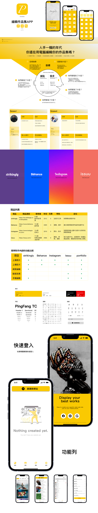
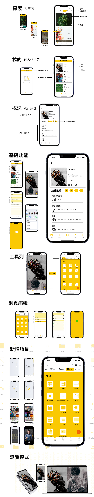
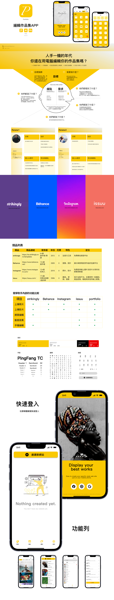
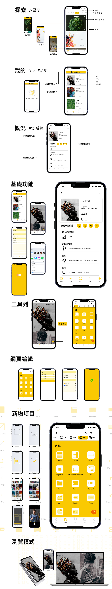

Hi there! I’m Patty Chang — a multidisciplinary designer specializing in graphic design, UI/UX design, and front-end HTML development. I turn ideas into engaging visuals and intuitive digital experiences through clarity, creativity, and user-centered thinking.
嗨！你好，我是 Patty Chang，一位多元領域的設計師，專注於平面設計、UI/UX 介面設計與 HTML 前端開發。我善於結合清晰的視覺語言與以用戶為核心的思維，將概念轉化為吸引人且直覺的數位體驗。


 


